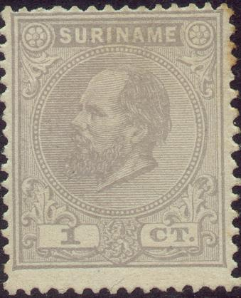
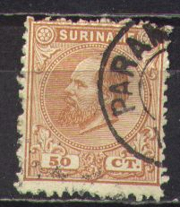
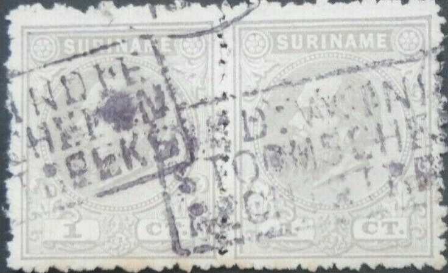
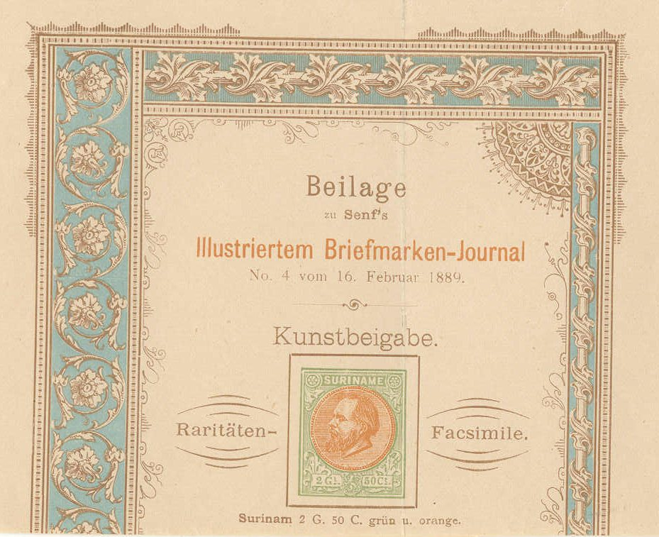
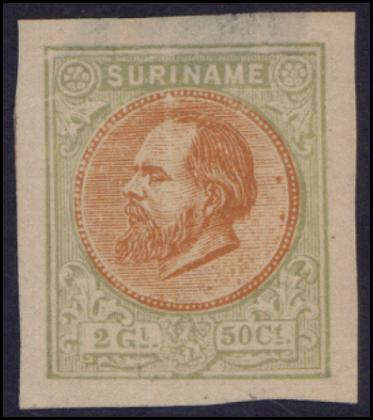
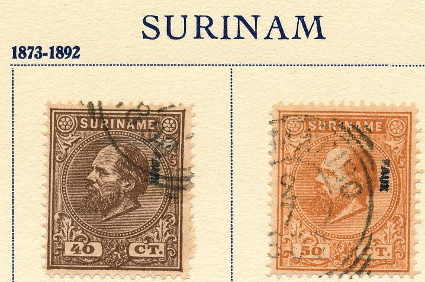
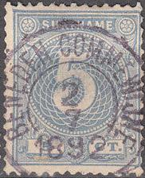
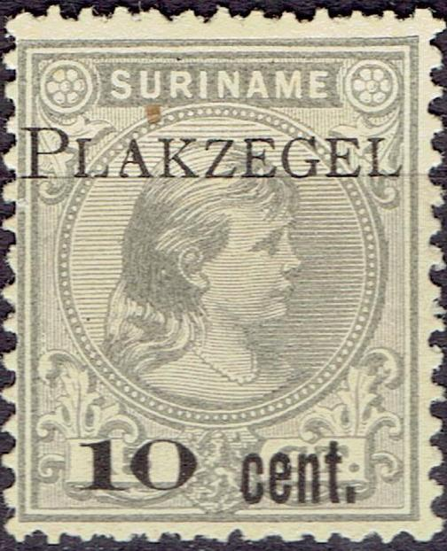
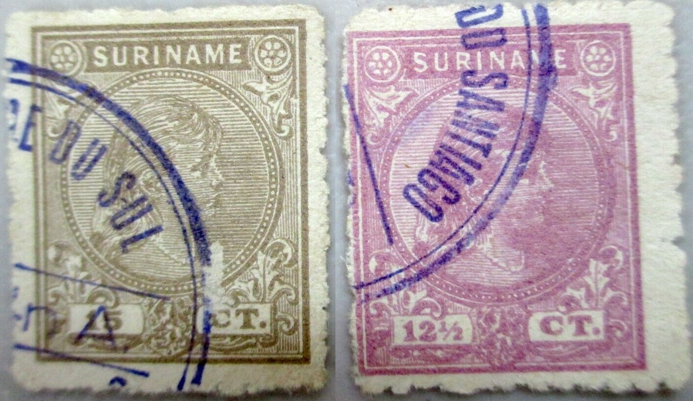

Suriname
Return To Catalogue - Surinam 1900-1920 and miscellaneous - Netherlands - Postage due stamps (TE BETALEN PORT)
Note: on my website many of the
pictures can not be seen! They are of course present in the
catalogue;
contact me if you want to purchase it:
A bogus issue of Surinam (or Dutch Guiana) was issued in 1861.
A crown in the centre of two branches, the inscription reads
'Post Zegel', with value below and one of the numbers '1 8 6 1'
in each of the corners. The stamp is printed in black on blue,
black on violet or black on red. It was listed in one of the
first stamp catalogues 'Standard guide to postage stamp
collecting' by Bellars and Davie (London, 1864). It is also
listed in the Mount Brown (1862) Catalogue of British, Colonial,
and Foreign Postage Stamps (see www.archive.org ) where it is
listed as
"DUTCH GUIANA. Crown surrounded by wreath, date
indicated."
(both catalogues without images). Other people believed this
stamp was issued in Dutch Indies. It has never been discovered
who made this stamp and why. I don't have a picture of this bogus
issue, if anybody possesses a picture, please contact me!



1 c grey 2 c yellow 2 1/2 c red 3 c green 5 c lilac 10 c brown 12 1/2 c grey 15 c grey 20 c green 25 c blue 30 c lilac 40 c brown 50 c brown 1 G brown and grey 2 G 50 c green and orange
The 1 G and 2.50 G values have larger margins around the stamp-image.
Value of the stamps |
|||
vc = very common c = common * = not so common ** = uncommon |
*** = very uncommon R = rare RR = very rare RRR = extremely rare |
||
| Value | Unused | Used | Remarks |
| 1 c | * | * | |
| 2 c | * | * | |
| 2 1/2 c | * | * | |
| 3 c | *** | *** | |
| 5 c | *** | ** | |
| 10 c | ** | ** | |
| 12 1/2 c | *** | *** | |
| 15 c | *** | *** | |
| 20 c | *** | *** | |
| 25 c | *** | *** | |
| 30 c | R | R | |
| 50 c | R | R | |
| 1 G | R | R | |
| 2.50 G | RR | RR | |
Surcharged

'2 1/2 CENT' on 50 c brown 10 c on 12 1/2 c blue 10 c on 15 c grey 10 c on 20 c green 10 c on 25 c blue 10 c on 30 c lilac 25 c on 40 c brown 25 c on 50 c brown 50 c on 1 G brown and grey 50 c on 2 1/2 G green and orange
Value of the stamps |
|||
vc = very common c = common * = not so common ** = uncommon |
*** = very uncommon R = rare RR = very rare RRR = extremely rare |
||
| Value | Unused | Used | Remarks |
| 2 1/2 c on 50 c | RR | *** | Exists with double surcharge: RRR |
| 10 c on 12 1/2 c | *** | ** | |
| 10 c on 15 c | RR | RR | |
| 10 c on 20 c | ** | ** | |
| 10 c on 25 c | *** | *** | |
| 10 c on 30 c | ** | ** | |
| 25 c on 40 c | ** | ** | |
| 25 c on 50 c | ** | ** | |
| 50 c on 1 G | R | R | |
| 50 c on 2 1/2 G | RR | RR | |
Typical cancels:

"SURINAME OVER St. NAZAIRE", "SURINAME VIA
PLYMOUTH" in a box and a typical Paramaribo cancel
Some numeral cancels similar to those of The Netherlands were used in Surinam: the numbers used were "204" to "207". The number "204" seems to belong to Paramaribo.
Numeral cancel "204": Paramaribo


50 c stamp with "NIEUW NICKERIE" cancel. Also a
"NIEUW ROTTERDAM" cancel.

Mute cancel with hollow squares from Coronie.

Cancel "NED: W.INDIE STOOMSCHEPEN RECHTSTREEKS"
(Netherlands West Indies steamships direct).
Postcard
A Senf forgery of the 2G50 c stamp. This stamp was given as an 'art supplement' with one of the Journals of Senf:


This 'imperforate variety' is probably a cut from the above
facsimile.
The forger Fournier also made forgeries of these stamps. I've seen the values 3 c, 1 G, 10 c on 20 c, 10 c on 25 c, 10 c on 30 c in 'The Fournier Album of Philatelic Forgeries'. According to the Serrane Guide, the whole set was forged by Fournier. The shading of the face is not as well done as in the genuine stamps. If cancelled, they have the cancel 'PARAMARIBO 2 7 1890'.


Fournier forgeries from a Fournier Album and forged 12 1/2 c and
1 G stamps.

Page from a Fournier Album of Philatelic Forgeries.

The forged 'PARAMARIBO 2 7 1890' cancel as used by Fournier.
Picture taken from a 'Fournier Album of Philatelic Forgeries'.

Probably a Fournier forgery as well.

Two imperforate colour trials of the 2 1/2 c in violet and blue;
I've also seen them in the colours orange, brown, green and
black.
Unlisted surcharge '1 Cent' on 2 1/2 c red. Probably the issue
made fraudulously be an Englishman with the help of the Surinam
postmaster.

1 c grey 2 c orange 2 1/2 c red 3 c green 5 c blue Surcharged with value and crown (1911)
'1/2 cent' on 1 c grey '1/2 cent' on 2 c orange
Value of the stamps |
|||
vc = very common c = common * = not so common ** = uncommon |
*** = very uncommon R = rare RR = very rare RRR = extremely rare |
||
| Value | Unused | Used | Remarks |
| 1 c | * | * | |
| 2 c | * | * | |
| 2 1/2 c | * | * | |
| 3 c | ** | ** | |
| 5 c | *** | * | |
| 1/2 c on 1 c | * | * | |
| 1/2 c on 2 c | *** | *** | |

2 1/2 c black and yellow
Specialists distinguish two types, differing in the 'f' of the background inscription.
Value of the stamps |
|||
vc = very common c = common * = not so common ** = uncommon |
*** = very uncommon R = rare RR = very rare RRR = extremely rare |
||
| Value | Unused | Used | Remarks |
| 2 1/2 c | * | * | |
10 c brown 12 1/2 c lilac 15 c grey 20 c green 25 c blue 30 c brown Surcharged
(reduced size)
15 c on 25 c blue (1911) 20 c on 30 c brown (1911)
Value of the stamps |
|||
vc = very common c = common * = not so common ** = uncommon |
*** = very uncommon R = rare RR = very rare RRR = extremely rare |
||
| Value | Unused | Used | Remarks |
| 10 c | *** | * | |
| 12 1/2 c | *** | ** | |
| 15 c | ** | * | |
| 20 c | ** | * | |
| 25 c | *** | ** | |
| 30 c | ** | * | |
| 15 c on 25 c | RR | RR | |
| 20 c on 30 c | *** | *** | |
Cancel "BENEDEN COMMEWIJNE" on a 10 c value

Fiscal stamps, overprinted "PLAKZEGEL"; the values 10 c
on 15 c, issued in 1910. Two other values exist according to the
Serrane guide (although the Serrane guide lists this stamp as 10
c on 12 1/2 c grey?).
I have seen the whole set of non-surcharged stamps. Most of them are badly perforated (I've even seen imperforate stamps). This forgery appears to be relatively common. Examples:



Here with different cancels: "..E DU SUL" and "..
DO SANTIAGO"
Distinguishing charcateristic of this forgery, the horizontal
inner lower right frameline continues towards the right (see red
arrow)
This forgery was offered by Louis Pasche of Lausanne in Switzerland in 1928 in a pricelist he send to several clients. He offers the complete (unsurcharged) set of 6 stamps for 50 Swiss Francs (10 sets) or 400 Swiss Francs (100 sets). On this list he also offers forgeries of Serbia (1904 set, 8 values), Haiti (1904, 4 values) and Transvaal (No. 86, 104, 105; according to the Yvert&Tellier catalogue, the 5 Pounds 1885 stamp and the 5 Sh and 10 Sh 1895 stamps). On Bill Claghorn's forgery site, http://members.tripod.com/claghorn1p/Surinam/Sur25_30.htm, they are referred to as 'Maison Pasche' forgeries. They are also sometimes called 'Faux de Lausanne'. I'm not sure if Pasche made these forgeries or just sold them. If cancelled, they appear to bear the cancel "ST.THOMAS 7 ? 3 ? 1902?" (which is not even in Surinam, but in Danish West Indies!).
For issues of Surinam from 1900 to 1920 and miscellaneous, click here.
Postzegels - Stamps - Timbres-Poste - Briefmarken

{kind=link}
{kind=link}
{kind=link}
{kind=link}
{kind=link}
{kind=link}
{kind=link}